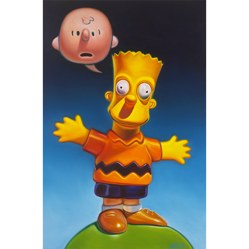

Literature
Ron English, Abject Expressionism: The Art of Ron English (San Francisco: Last Gasp, 2007), p. 174. ISBN 978-0867196894.
Notes
The composition combines Bart Simpson from The Simpsons with the Peanuts character Charlie Brown, created by Charles M. Schulz.
In Abject Expressionism, this work was erroneously reported as 30x24 inches.
This composition was later reproduced by the artist as a limited-edition print in the Vinyl Chord: A Revolutionary Record Store series; see the related print on Artsy.

Ancillary Documentation